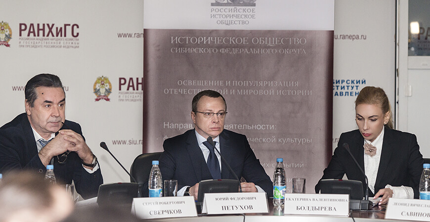
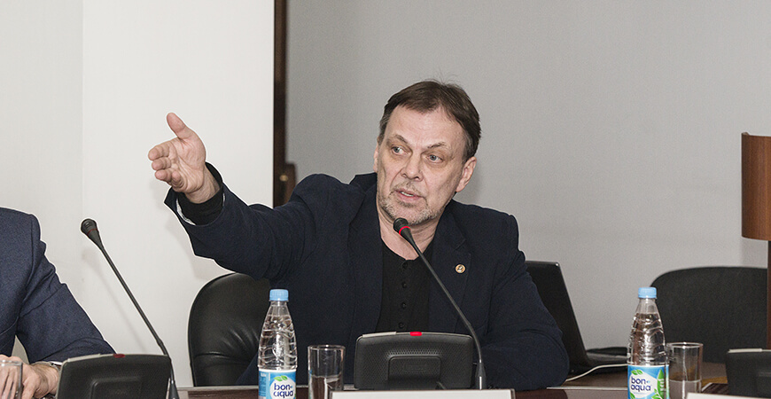
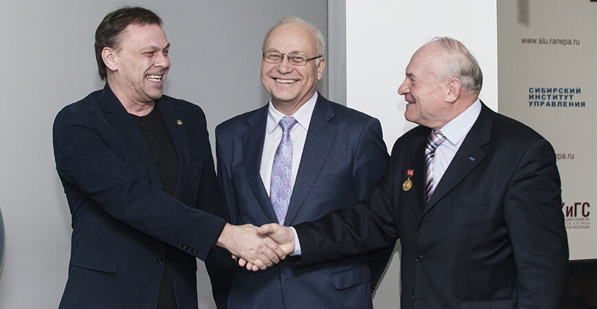
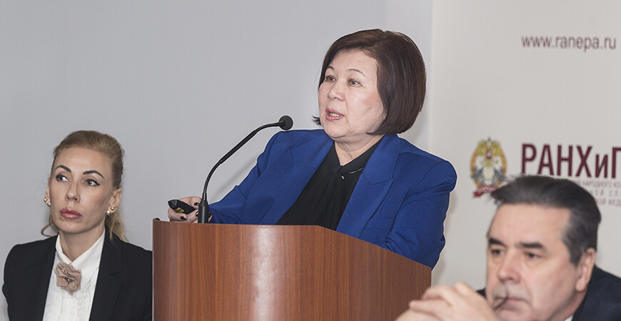

17 февраля в конференц-зале РАНХиГС состоялся Историко-этнографический симпозиум с участием представителей стран ШОС «Этническая картина мира в современной гуманитарной науке».
Мероприятие было организовано Автономной некоммерческой организацией "Историческое общество Сибирского федерального округа" совместно с Сибирским институтом управления (СИУ РАНХиГС) и Новосибирским государственным университетом (НГУ).
В рамках симпозиума обсуждался широкий круг вопросов: проблемы соотношения культурных ценностей и политических интересов в современном мире; аспекты гражданской консолидации в России; механизмы противодействия этническому и религиозному экстремизму. Представительство участников из стран ШОС позволило активизировать культурный обмен и научное партнерство в гуманитарных науках.
Актуальность темы Симпозиума и большой потенциал развития партнерства стран ШОС подчеркнул Первый заместитель Губернатора Новосибирской области Ю.Ф. Петухов в своем приветственном слове к участникам симпозиума. «Для нашего региона обсуждение проблем, поставленных на симпозиуме, имеет самое актуальное значение. Мы гостеприимный регион, очень многонациональный и многоконфессиональный, и очень большую работу делают органы государственной власти, органы муниципального самоуправления для того, чтобы все нации и народности проживали в дружбе и комфорте на территории нашей Новосибирской области. Очень важно было услышать мнение специалистов-теоретиков в этой сфере, чтобы осознать насколько в практических вопросах мы действуем правильно. Очень важно, что симпозиум состоялся на территории нашего региона, и это заслуга, прежде всего, организаторов симпозиума – отделения Российского Исторического Общества АНО «Историческое общество Сибирского федерального округа», а также филиала Российской Президентской Академии».
Приветственные письма поступили от Российского исторического общества и депутата Государственной Думы РФ А.А. Карелина. В частности, Карелин А.А. подчеркнул: «Симпозиум призван выработать модели гармонизации международных отношений и даст верные импульсы для дальнейшего нравственного, политического и взаимовыгодного экономического развития наших стран».
Экспертами симпозиума были Головнёв А.В., (доктор исторических наук, профессор, член-корреспондент РАН, директор Этнографического Бюро, главный научный сотрудник Института истории и археологии УрО РАН); Попков Ю.В., (доктор философских наук, профессор, зам. директора по научной работе, зав. сектором этносоциальных исследований Института философии и права СО РАН, член Объединенного ученого совета по гуманитарным наукам СО РАН); Торогельдиева Б.М., доктор политических наук, профессор кафедры "ГМУ и политических технологий" Высшей школы администрирования Академии государственного управления при президенте Кыргызской Республики); (Дятлов В.И. (доктор исторических наук, профессор, Иркутский государственный университет); Зуев А.С. (доктор исторических наук, профессор, директор Гуманитарного института НГУ).
«Благодаря участию представителей разных специальностей, различных научных школ, теоретиков и практиков удалось организовать живое содержательное обсуждение. Подобные дискуссионные площадки всегда подразумевают столкновение мнений и, несмотря на звучавшие многообразные трактовки ключевых понятий “этнос”, “национальность”, “идентичность”, участникам симпозиума все же удалось выработать общий список актуальных вопросов, которые должны изучаться на базе методологий гуманитарных наук».
А.В. Головнев отметил актуальность тем, поднятых на симпозиуме. «Это была встреча теоретиков и практиков, ученых и управленцев, что очень важно! Наука сегодня должна быть практичной. Мне очень нравится, когда наука не просто «умничает в пространство», а возвращает знания туда, откуда она их получала изначально – в жизнь. Мне кажется очень своевременным заострение внимания на полиэтничности, как очень важном ресурсе российской политики и российской жизненной практики. Что касается организации симпозиума, то я считаю, что Историческое общество Сибирского федерального округа необходимо поддержать в их начинаниях. Это очень хорошо, когда региональные структуры не ждут куска какого-то большого пирога от федерального центра, а сами проявляют инициативу, и очень здорово, что в итоге у них все получается».
Сергей Сверчков, директор СИУ РАНХиГС, доктор ф.- мат. наук: «Симпозиум еще раз напомнил о том, как часто мы недооцениваем сильные стороны своей страны, видим риски и минусы там, где на самом деле лежат точки нашего потенциального роста. Нельзя стараться заработать исключительно на нефти или на газе! Наше будущее в использовании уникального опыта множества народов, живущих в нашей стране. Россия сильна тем, что наша страна потрясающе мультиэтнична. Новосибирск - это одна из важных территорий в этом смысле.
Хочу отметить, насколько важную функцию сегодня выполняет российское историческое общество. Огромную благодарность хочется выразить академику Анатолию Пантелеевичу Деревянко за инициативу создания подобной структуры. А на местном уровне эту большую работу взяла на себя Екатерина Валентиновна Болдырева.
По словам А.С. Зуева, директора Гуманитарного института Новосибирского Государственного Унивеситета преимуществом данного симпозиума стал его междисциплинарный характер:«Безусловно, окружающая нас жизнь демонстрирует, что проблема этничности остается весьма актуальной. Несколько десятков лет назад заговорили об этническом ренессансе, когда народы стали вдруг вспоминать свои корни и отстаивать их в попытках противостоять глобализации, которая неизбежно сопровождается унификацией и универсализмом. Это естественная реакция этноса, как социобиологического организма - стремление сохранить свою идентичность. В этом смысле симпозиум был очень интересным. Докладчики были невероятно высокого уровня. Очень хорошо, что в дискуссии участвовали представители разных научных направлений - этнологии, антропологии, политологии, социологии и истории. Каждый из них представил свое видение по сути одной и той же проблемы полиэтничности с позиции разных наук. Отдельную благодарность хочу выразить Андрею Владимировичу Головневу, которого я давно знаю, как человека неординарно мыслящего и очень креативного. Он прекрасный лектор, обладает определенной харизмой. Его лекция в НГУ, организованная при поддержке «Исторического общества Сибирского Федерального Округа» прошла на самом высоком уровне. Что касается деятельности «Исторического общества Сибирского Федерального Округа», то я считаю ее, безусловно, полезной. Эта организация объединяет усилия ученых-историков. Мы сегодня несколько раздроблены, поскольку трудимся в разных направлениях в разных структурах. Задача регионального отделения российского исторического общества, на мой взгляд, заключается в том, чтобы вывести историков из узкой академической среды в более широкое публичное пространство. Мероприятия, подобные прошедшему симпозиуму, с одной стороны, способствуют координации работы историков, а с другой, презентуют самих историков и результаты их научных исследований широкой общественности.»
По словам Б.М. Торогельдиевой , доктора Политических наук, профессора Академии Государственного Управления при Президенте Кыргызской Республики: « Проведение симпозиума на тему «Этническая картина мира в современной гуманитарной науке» с представителями стран ШОС имеет актуальное значение. В современных условиях глобализации межэтнические взаимодействия сопровождают массовые миграционные потоки, что требует государственное осмысление политики управления этническим разнообразием. Страны ШОС (Китай, Россия, Кыргызстан, Казахстан, Таджикистан, Узбекистан) включают 60% территории Евразии, где проживают сотни разнообразных этносов, со своими уникальными культурами. Экспертная площадка симпозиума позволило осмыслить этнические процессы, происходящие в этих странах. Важное значение, , в государственной политике Кыргызской Республики в сфере межэтнических отношений имеет приоритет формирования общегражданской идентичности, при обеспечении этнокультурного развития каждого гражданина страны.
Леонид Савинов, доктор политических наук, доцент, декан факультета государственного и муниципального управления СИУ РАНХиГС: «Прошедший симпозиум стал крупнейшей научной площадкой, на которой ученые России и стран ШОС обсудили современную этническую картину мира сквозь призму гуманитарной науки. Широкое представительство известных ученых и экспертов позволило говорить о симпозиуме, как невероятно полезному обмену мнений по самому широкому кругу вопросов. Обсуждались такие проблемы, как "взрыв этничности" в условиях современности, этничность и политика, этнокультурное многообразие России и ее регионов, миграционные процессы, борьба с этническим и религиозным экстремизмом.Тематика симпозиума крайне актуальна в силу полиэтничности современного мира. Общества находятся в. Проблемы полиэтничности актуальны не только с научных, но и политических позиций. Сегодня национальная политика - важнейшая сфера внутренней политики большинства государств и условие их национальной безопасности. Это не только управление этнокультурным многообразием. Это и мирное сосуществование десятков народов. Для России это крайне актуально.
При реализации проекта , использовались средства государственной поддержки, выделенные в качестве гранта в соответствии с распоряжением Президента Российской Федерации от 05.04.2016 №68-рп и на основании конкурса , проведенного Национальным Благотворительным Фондом.
Участниками мероприятия стал известные ученые историки, этнографы, политологи и социологи, представители общественных и религиозных организаций, обучающиеся вузов г. Новосибирска и г. Барнаула. Всего в симпозиуме приняло участие более 150 человек. По итогам симпозиума планируется публикация лучших докладов в научных изданиях СИУ РАНХиГС.